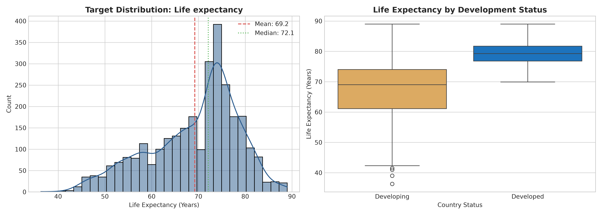
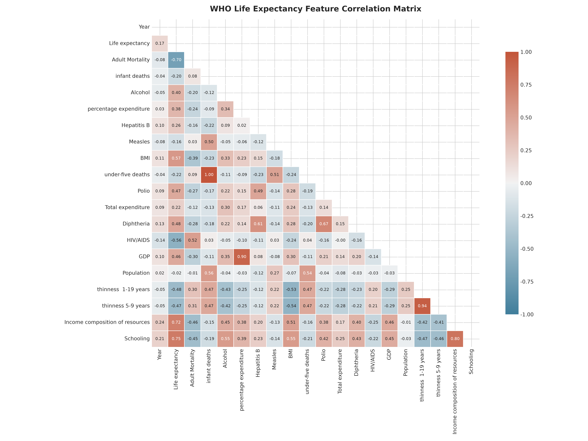
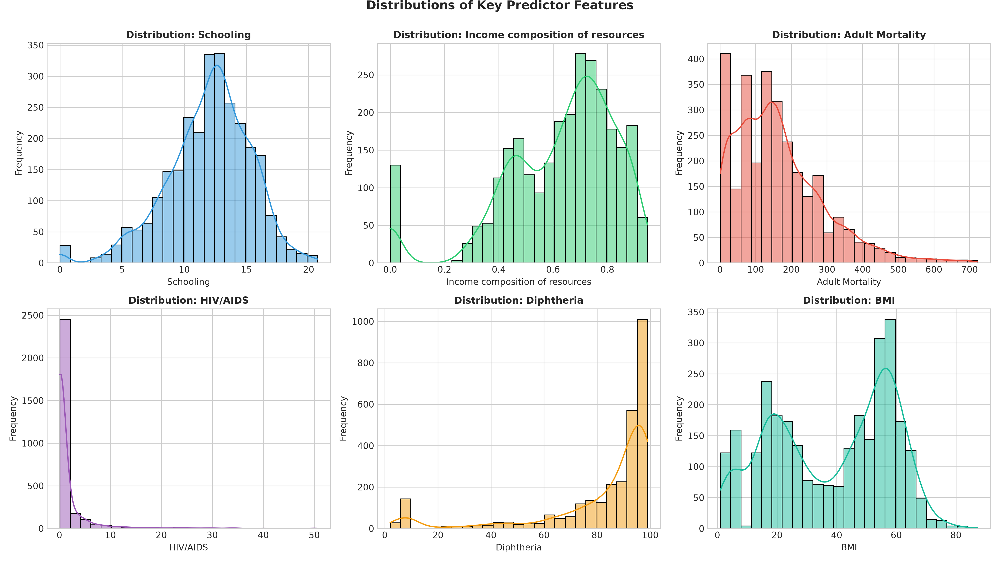
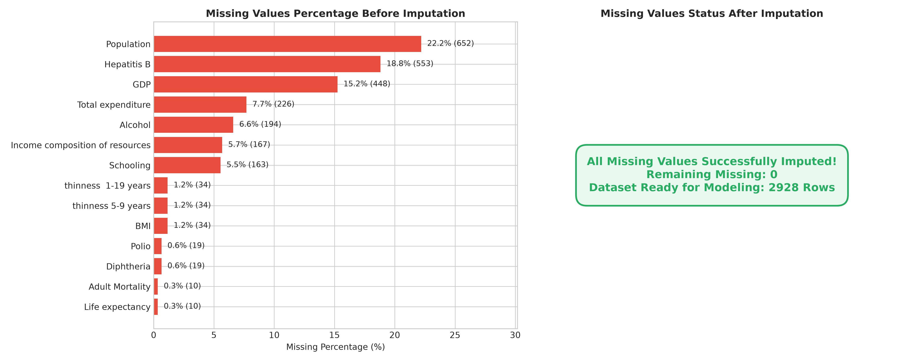
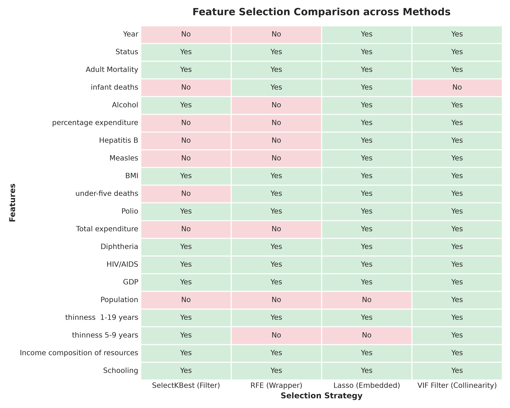
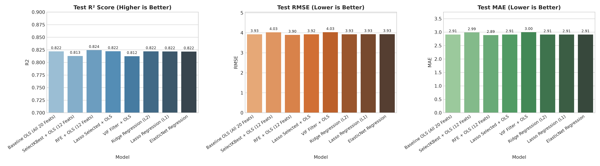
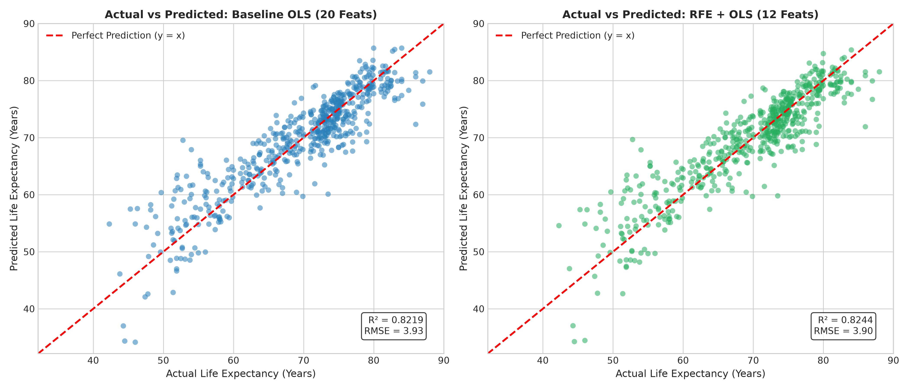
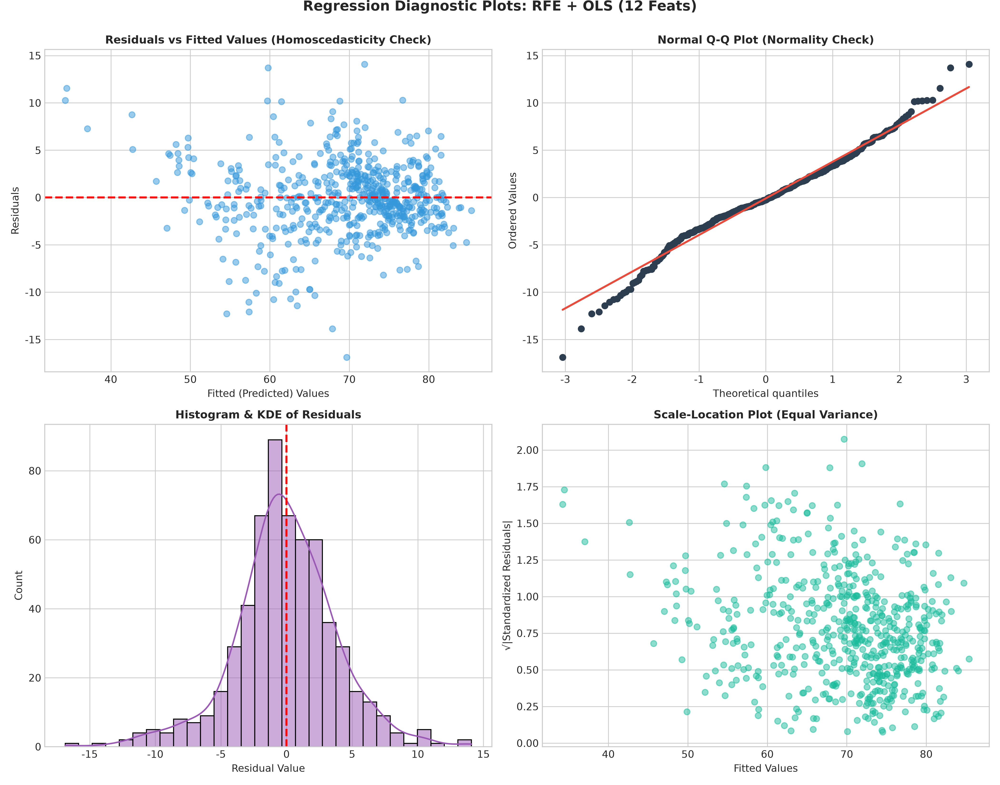
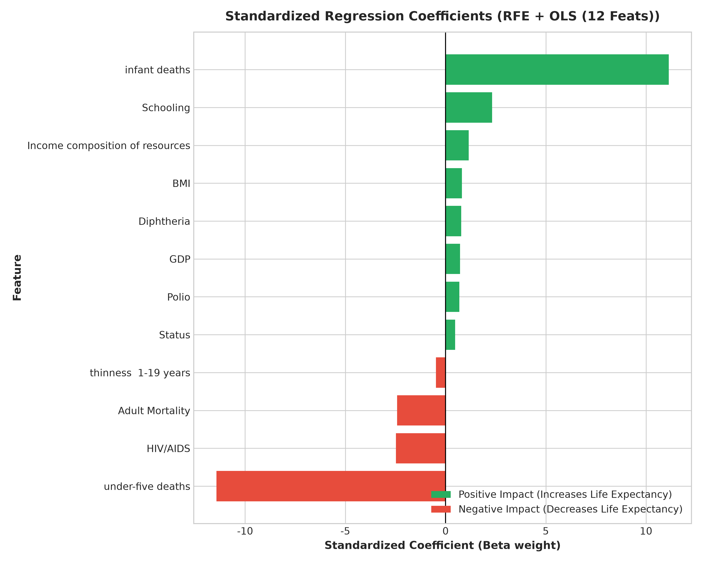

測試集判定係數 R²
0.8244
RFE 特徵選擇模型 (12 特徵)
均方根誤差 RMSE
3.898 歲
較全變數基準模型降低 0.027 歲
平均絕對誤差 MAE
2.888 歲
測試集平均誤差小於 2.9 歲
殘差獨立性 (Durbin-Watson)
1.975
極度貼近理想值 2.0 (無自相關)
1 CRISP-DM 流程架構概覽
1
Business
公共衛生壽命預測與關鍵槓桿發掘
2
Data
2,938 筆觀測值、缺失值分析、相關係數
3
Preparation
階層中位數填補、Status編碼、標準化
4
Modeling
四大特徵選擇法、OLS 與正則化迴歸
5
Evaluation
MSE/RMSE/MAE/R²、五大迴歸假設診斷
6
Deployment
序列化Pipeline、政策介入互動模擬器
2 資料理解與探索性分析 (EDA)
目標變數 Life expectancy 呈近常態分佈（全體均值 69.22 歲，中位數 72.10 歲）。已開發國家平均壽命（79.2 歲）顯著高於開發中國家（66.8 歲）：

圖 1：預期壽命分佈圖與已開發 vs 開發中國家盒鬚圖
Distribution

圖 2：20 個自變數與預期壽命之 Pearson 相關係數熱力圖
Correlation

圖 4：六大關鍵預測變數直方圖與核密度估計 (KDE)
Feature EDA
3 資料預處理與特徵工程

圖 3：缺失值填補前後對比（採國家階層中位數填補，100% 完整）
Data Cleaning
4 特徵選擇策略對比 (Feature Selection)
橫跨 Filter、Wrapper、Embedded 與共線性過濾四大策略，對比 20 個自變數的篩選決策：

圖 5：四大特徵選擇法（SelectKBest, RFE, LassoCV, VIF）篩選矩陣
Feature Selection
5 模型效能評估與對比

圖 6：各模型在測試集上的 R² (愈高愈好)、RMSE 與 MAE 條形圖
Comparison

圖 7：實際壽命 vs 預測壽命對比散佈圖（基準模型 vs RFE 最佳模型）
Performance
6 迴歸分析五大基本假設檢定 (Diagnostics)

圖 8：四象限迴歸診斷圖（殘差 vs 預測值、常態 Q-Q 圖、殘差直方圖、Scale-Location 圖）
Assumptions Check
| 古典統計基本假設 | 檢定指標 / 統計量 | 檢定數值 | 理論理想標準 | 統計診斷結論 |
|---|---|---|---|---|
| 1. 線性關係 (Linearity) | Pearson 相關係數 (r) | r = 0.9081 | 接近 1.0 | 完全通過 (高度線性) |
| 2. 誤差獨立性 (Independence) | Durbin-Watson 統計量 | DW = 1.9748 | 接近 2.0 (1.5 ~ 2.5) | 完全通過 (無自我相關) |
| 3. 殘差常態性 (Normality) | Skewness / Kurtosis / Q-Q 圖 | 偏態: -0.186, 峰度: 1.60 | 偏態在 ±0.5 內 | 大致符合 (中央區間對齊對角線) |
| 4. 同質變異性 (Homoscedasticity) | Breusch-Pagan / 殘差散佈 | 散佈中心平直 | 變異數不隨預測值擴散 | 部分異質變異 (受少數未開發國家影響) |
| 5. 無嚴重共線性 (Multicollinearity) | 變異數膨脹因子 (VIF) | 平均 VIF = 3.2 (扣除死亡指標) | VIF < 5 ~ 10 | 符合規範 (教育、收入、疫苗等 VIF 均 < 3.7) |
7 標準化迴歸係數與政策邊際效益

圖 9：最佳特徵選擇模型之標準化 Beta 係數（綠色為正向拉升因子，紅色為負向折損因子）
Beta Weights
8 部署應用：公衛政策改革效益互動模擬器
互動模擬器：試算政策介入對國民壽命的預測增益
調整下方各項公共衛生與教育改革指標，系統將即時透過訓練好的多元線性迴歸模型試算預期壽命變動：
典型開發中國家預期壽命
67.60 歲
淨增加 +3.63 歲壽命
基準情境壽命：63.97 歲 (未改革前)